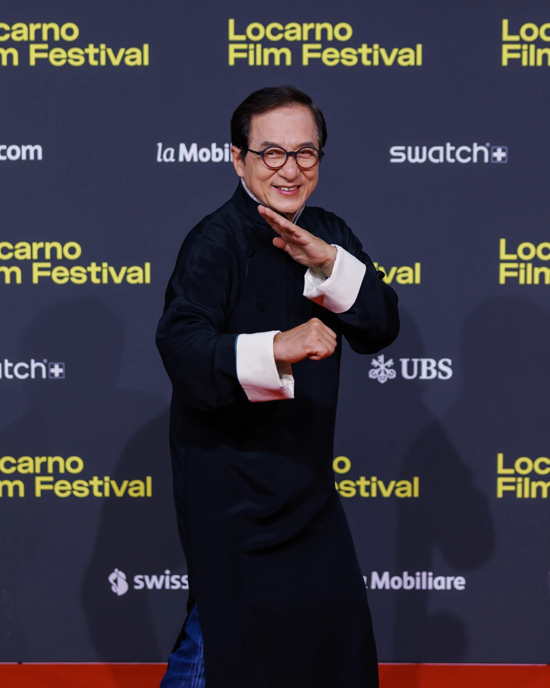

|
 |
Name | Jackie Chan |
| Born | Chan Kong-sang April 7, 1954 Victoria, British Hong Kong | |
| Education | Peking Opera School | |
| Age | 72 | |
| Occupations | Martial artist Actor Director Producer Screenwriter Action choreographer Singer Stunt director Stunt performer |
|
| Years active | 1962-present | |
| Spouse | Joan Lin | |
| Children | 2,including Jaycee Chan |
Jackie was born on 7 April 1954 in Hong Kong as Chan Kong-sang to Charles and Lee-Lee Chan, refugees from the Chinese Civil War. His parents nicknamed him Pao-pao (炮炮 'Cannonball') because the energetic child was always rolling around. His parents worked for the French ambassador in Hong Kong, and Chan spent his formative years within the grounds of the consul's residence in the Victoria Peak district.
Jackie began his career by appearing in small roles at the age of five as a child actor. At age eight, he appeared with some of his fellow "Little Fortunes" in the film Big and Little Wong Tin Bar (1962) with Li Li Hua playing his mother. The following year, the young actor appeared in extras of The Love Eterne (1963) and had a small role in King Hu's 1966 film Come Drink with Me. In 1971, after an appearance as an extra in another kung fu film, A Touch of Zen, Chan was signed to Chu Mu's Great Earth Film Company. At seventeen, he worked as a stuntman in the Bruce Lee films Fist of Fury and Enter the Dragon under the stage name Chan Yuen Lung (陳元龍). He received his first starring role later that year in Little Tiger of Canton, which had a limited release in Hong Kong in 1973.
| Year | Title | Role | Director |
|---|---|---|---|
| 1962 | Big and Little Wong Tin Bar | Child | Lung To |
| 1998 | Rush Hour | Inspector Yang Naing Lee | Brett Ratner |
| 2004 | New Police Story | Chan Kwok Wing | Benny Chan |
| 2017 | Kung Fu Yoga | Jack | Stanley Tong |
| 2023 | Ride On | Lao Luo | Larry Yang |
nangchanaye24.github.com © All right reserved.
By Nang Chan Aye